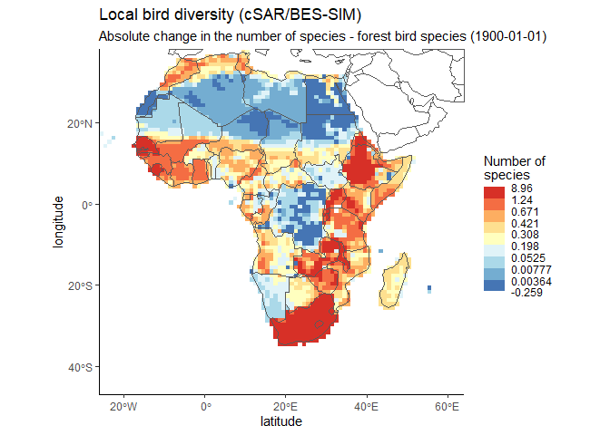
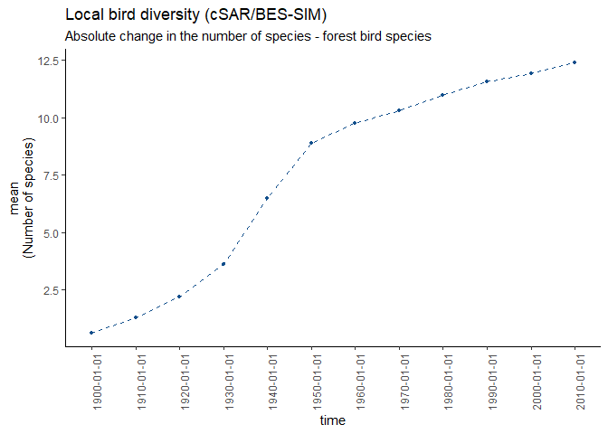
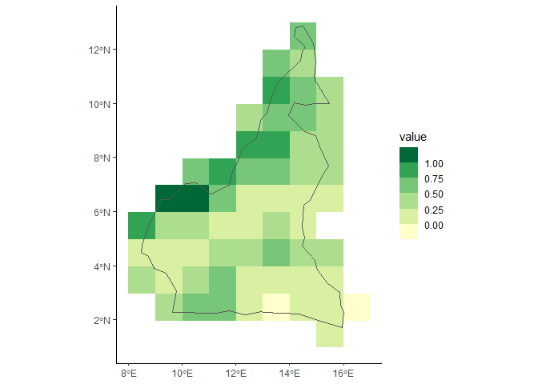

This package can be used to easily access the data of the EBV netCDFs which can be downloaded from the EBV Data Portal. It also provides some basic visualization. Advanced users can build their own netCDFs following the EBV structure.
1. Basis
The EBV netCDF structure is designed to hold Essential Biodiversity Variables. This concept is further described here. The files are based on the Network Common Data Format (netCDF). Additionally, it follows the Climate and Forecast Conventions (CF, version 1.8) and the Attribute Convention for Data Discovery (ACDD, version 1.3).
2. Data structure
The structure allows several datacubes per netCDF file. These cubes have four dimensions: longitude, latitude, time and entity, whereby the last dimension can, e.g., encompass different species or groups of species, ecosystem types or other. The usage of hierarchical groups enables the coexistence of multiple data cubes. All cubes share the same dimensions. The first level (netCDF group) are scenarios, e.g., the modelling for different Shared Socioeconomic Pathways (SSP) scenarios. The second level (netCDF group) are metrics, e.g., the percentage of protected area per pixel and its proportional loss over a certain time span per pixel. All metrics are repeated per scenario, if any are present.
├── scenario_1
│ └── metric_1
│ └── ebv_cube [lon, lat, time, entity]
└── scenario_2
└── metric_2
└── ebv_cube [lon, lat, time, entity]Just keep in mind: All EBV netCDF always have a metric. But they may or may not have a scenario. The resulting datacubes hold the data. These datacubes are 4D.
2. Installation
You can install the ebvcube packages with:
#get the current version on CRAN
install.packages('ebvcube')
#install the latest version from GitHub
devtools::install_github('https://github.com/LuiseQuoss/ebvcube/tree/dev')3. Working with the package - a quick intro
The example data set used in this README is a spatial subset (African continent) of the Local bird diversity (cSAR/BES-SIM) data set by Ines Martins.
3.1 Take a very first look at the file
With the following two functions you get the metadata of a specific EBV netCDF file. First we take a look at some basic metadata of that file. The properties encompass much more information!
library(ebvcube)
#set the path to the file
file <- system.file(file.path("extdata","martins_comcom_subset.nc"), package="ebvcube")
#read the properties of the file
prop.file <- ebv_properties(file, verbose=FALSE)
#take a look at the general properties of the data set - there are more properties to discover!
prop.file@general[1:4]
#> $title
#> [1] "Local bird diversity (cSAR/BES-SIM)"
#>
#> $description
#> [1] "Changes in bird diversity at 1-degree resolution caused by land use, estimated by the cSAR model for 1900-2015 using LUH2.0 historical reconstruction of land-use."
#>
#> $ebv_class
#> [1] "Community composition"
#>
#> $ebv_name
#> [1] "Taxonomic and phylogenetic diversity"
slotNames(prop.file)
#> [1] "general" "spatial" "temporal" "metric" "scenario" "ebv_cube"Now let’s get the paths to all possible datacubes. The resulting data.frame includes the paths and also descriptions of the metric and/or scenario and/or entity. The paths basically consist of the nested structure of scenario, metric and the datacube.
datacubes <- ebv_datacubepaths(file, verbose=FALSE)
datacubes
#> datacubepaths metric_names
#> 1 metric_1/ebv_cube Relative change in the number of species (%)
#> 2 metric_2/ebv_cube Absolute change in the number of speciesIn the next step we will get the properties of one specific datacube - fyi: the result also holds the general file properties from above.
prop.dc <- ebv_properties(file, datacubes[1,1], verbose=FALSE)
prop.dc@metric
#> $name
#> [1] "Relative change in the number of species (%)"
#>
#> $description
#> [1] "Relative change in the number of species (S) using the year 1900 as reference (e.g. -50 corresponds to a decrease in 50% of the number of species in the cell since 1900, (S_year-S_1900)/S_1900*100)"3.2 Plot the data to get a better impression
To discover the spatial distribution of the data, you can plot a map of the datacube that we just looked at. It has 12 timesteps. Here we look at the first one.
#plot the global map
dc <- datacubes[2,1]
ebv_map(file, dc, entity=1, timestep = 1, classes = 9,
verbose=FALSE, col_rev = TRUE)
It’s nice to see the global distribution, but how is the change of that datacube (non forest birds) over time? Let’s take a look at the average. The function returns the values, catch them!
#get the averages and plot
averages <- ebv_trend(file, dc, entity=1, verbose=FALSE)
averages
#> [1] 0.6140731 1.2972444 2.2045310 3.6016083 6.4691830 8.8957375
#> [7] 9.7711291 10.3299345 10.9822654 11.5685090 11.9421034 12.3869482It would be cool to have that for other indicators as well? Check out the different options for ‘method’.
3.3 Read the data from the files to start working
Before you actually load the data it may be nice to get an impression of the value range and other basic measurements.
#info for whole dataset
measurements <- ebv_analyse(file, dc, entity=1, verbose=FALSE)
#see the included measurements
names(measurements)
#> [1] "min" "q25" "q50" "mean" "q75" "max" "std" "n" "NAs"
#check out the mean and the number of pixels
measurements$mean
#> [1] 0.6140731
measurements$n
#> [1] 7650
#info for a subset defined by a bounding box
#you can also define the subset by a Shapefile - check it out!
bb <- c(-26, 64, 30, 38)
measurements.bb <- ebv_analyse(file,dc, entity = 1, subset = bb, verbose=FALSE)
#check out the mean of the subset
measurements.bb$mean
#> [1] 0.3241093
measurements.bb$n
#> [1] 720To access the first three timesteps of the data you can use the following:
#load whole data as array for two timesteps
data <- ebv_read(file, dc, entity = 1, timestep = 1:3, type = 'a')
dim(data)
#> [1] 85 90 3You can also get a spatial subset of the data by providing a Shapefile.
#load subset from shapefile (Cameroon)
shp <- system.file(file.path('extdata','cameroon.shp'), package="ebvcube")
data.shp <- ebv_read_shp(file, dc, entity=1, shp = shp, timestep = c(1,2,3), verbose=FALSE)
dim(data.shp)
#> [1] 12 9 3
#very quick plot of the resulting raster plus the shapefile
borders <- terra::vect(shp)
ggplot2::ggplot() +
tidyterra::geom_spatraster(data = data.shp[[1]]) +
tidyterra::geom_spatvector(data = borders, fill = NA) +
ggplot2::scale_fill_fermenter(na.value=NA, palette = 'YlGn', direction = 1) +
ggplot2::theme_classic() Imagine you have a very large dataset but only limited memory. The package provides the possibility to load the data as a DelayedArray. The ebv_write() function helps you to write that data back on disk properly. Look into the manual to obtain more information.
3.4 Take a peek on the creation of an EBV netCDF
a. Create an empty EBV netCDF (with metadata)
First of all, you have to insert all the metadata in the EBV Data Portal and then use the resulting text file (json format) to create an empty netCDF which complies to the EBV netCDF structure, i.e., it has the correct structure mapped to your data and holds the metadata. Additionally to that (json) text file, the function needs a list of all entities the netCDF (see help page for detailed information) will encompass and geospatial information such as the coordinate reference system.
The example is based on the Local bird diversity (cSAR/BES-SIM).
#paths
json <- system.file(file.path('extdata','metadata.json'), package="ebvcube")
newNc <- file.path(system.file(package="ebvcube"),'extdata','test.nc')
entities <- c('forest bird species','non-forest bird species','all bird species')
#defining the fillvalue - optional
fv <- -3.4e+38
#create the netCDF
ebv_create(jsonpath = json, outputpath = newNc, entities = entities,
epsg = 4326, extent = c(-180, 180, -90, 90), resolution = c(1, 1),
fillvalue = fv, overwrite=TRUE, verbose=FALSE)
#needless to say: check the properties of your newly created file to see if you get what you want
#especially the entity_names from the slot general should be checked to see if your csv was formatted the right way
print(ebv_properties(newNc, verbose=FALSE)@general$entity_names)
#> [1] "forest bird species" "non-forest bird species"
#> [3] "all bird species"
#check out the (still empty) datacubes that are available
dc.new <- ebv_datacubepaths(newNc, verbose=FALSE)
print(dc.new)
#> datacubepaths metric_names
#> 1 metric_1/ebv_cube Relative change in the number of species (%)
#> 2 metric_2/ebv_cube Absolute change in the number of speciesHint: You can always take a look at your netCDF in Panoply provided by NASA. That’s very helpful to understand the structure.
b. Add your data to the EBV NetCDF
In the next step you can add your data to the netCDF from GeoTiff files or in-memory objects (matrix/array). You need to indicate the datacubepath the data belongs to. You can add your data timestep per timestep, in slices or all at once. You can simply add more data to the same datacube by changing the timestep definition.
#path to tif with data
root <- system.file(file.path('extdata'), package="ebvcube")
tifs <- c('entity1.tif', 'entity2.tif', 'entity3.tif')
tif_paths <- file.path(root, tifs)
#adding the data
entity <- 1
for (tif in tif_paths){
ebv_add_data(filepath_nc = newNc, datacubepath=dc.new[1,1], entity = entity,
timestep=1:3, data = tif, band=1:3)
entity <- entity + 1
}c. Add missing attributes to datacube
Ups! So you did a mistake and want to change the attribute?! No problem. Just use the upcoming function to change it.
ebv_attribute(newNc, attribute_name='units', value='Percentage', levelpath=dc.new[1,1])
#check the properties one more time - perfect!
print(ebv_properties(newNc, dc.new[1,1], verbose=FALSE)@ebv_cube$units)
#> [1] "Percentage"In this case the levelpath corresponds to the datacube path. But you can also alter attributes at the metric or scenario level. See the manual for more info.
4. Cite package
citation('ebvcube')
#> To cite ebvcube in publications use:
#>
#> Quoss L, Fernandez N, Langer C, Valdez J, Pereira H (2023). _ebvcube:
#> Working with netCDF for Essential Biodiversity Variables_. German
#> Centre for Integrative Biodiversity Research (iDiv)
#> Halle-Jena-Leipzig, Germany. R package version 0.2.1,
#> <https://github.com/LuiseQuoss/ebvcube>.
#>
#> A BibTeX entry for LaTeX users is
#>
#> @Manual{,
#> title = {ebvcube: Working with netCDF for Essential Biodiversity Variables},
#> author = {Luise Quoss and Nestor Fernandez and Christian Langer and Jose Valdez and Henrique Miguel Pereira},
#> year = {2023},
#> note = {R package version 0.2.1},
#> organization = {German Centre for Integrative Biodiversity Research (iDiv) Halle-Jena-Leipzig},
#> address = {Germany},
#> url = {https://github.com/LuiseQuoss/ebvcube},
#> }List of all functions
| Functionality | Function | Description |
|---|---|---|
| Basic access | ebv_datacubepaths | Get all available data cubes in the netCDF |
| ebv_properties | Get all the metadata of the netCDF | |
| ebv_download | Download EBV netCDFs from the EBV Portal | |
| Data access | ebv_read | Read the data |
| ebv_read_bb | Read a spatial subset given by a bounding box | |
| ebv_read_shp | Read a spatial subset given by a Shapefile | |
| ebv_analyse | Get basic measurements of the data | |
| ebv_write | Write manipulated data back to disc | |
| Data visualization | ebv_map | Plot a map of the specified data slice |
| ebv_trend | Plot the temporal trend | |
| Data creation | ebv_create | Create a new EBV netCDF |
| ebv_create_taxonomy | Create a new EBV netCDF with taxonomy info | |
| ebv_add_data | Add data to the new netCDF | |
| ebv_attribute | Change an attribute value |